| 개선 영역 | Canvas (Before) | xnquiz (After) |
|---|---|---|
| 선택 직관성 | 유형 라벨만 보고 의미 추측 | 유형 카드 + 호버 시 예시 미리보기 |
| 입력 효율 | 문항을 한 개씩 직접 입력해야 함 | 엑셀로 여러 문항을 한 번에 업로드 |
| 운영 자율성 | 채점 방식이 시스템에 고정 | 교수자가 채점 방식을 직접 선택 |
| 정보 가시성 | 통계 화면까지 진입해야 핵심 정보 노출 | 목록 행에 응시율 / 평균 점수 직접 표시 |
| 디자인 일관성 | 화면마다 다른 버튼/색상 | 디자인 시스템으로 통일 |
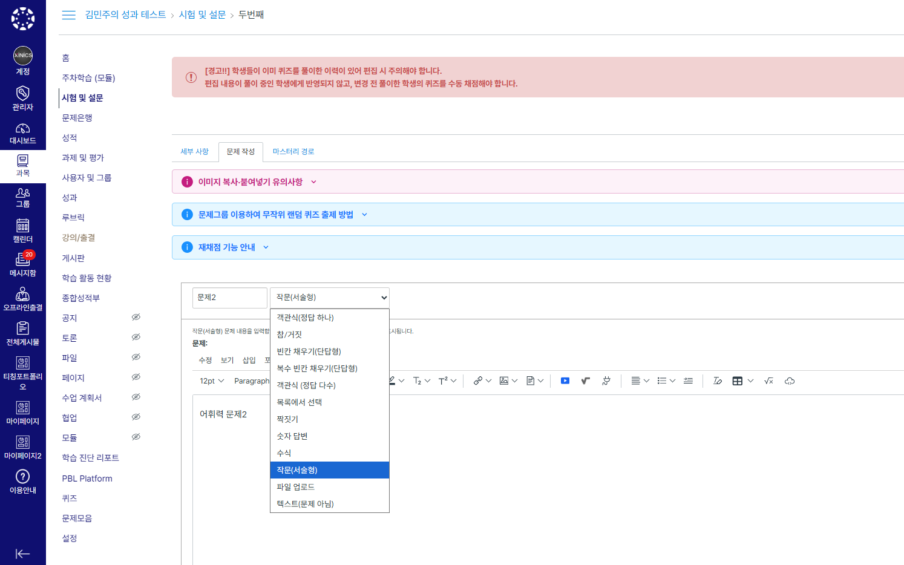
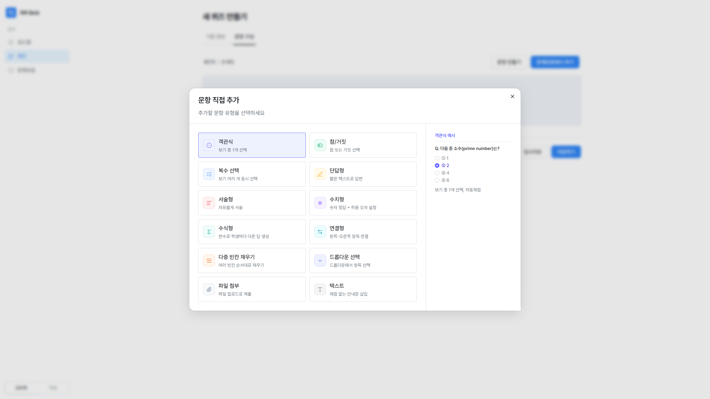
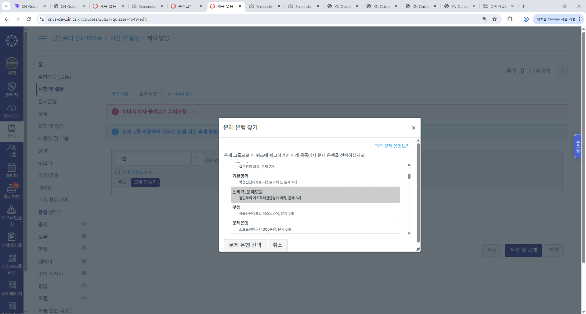
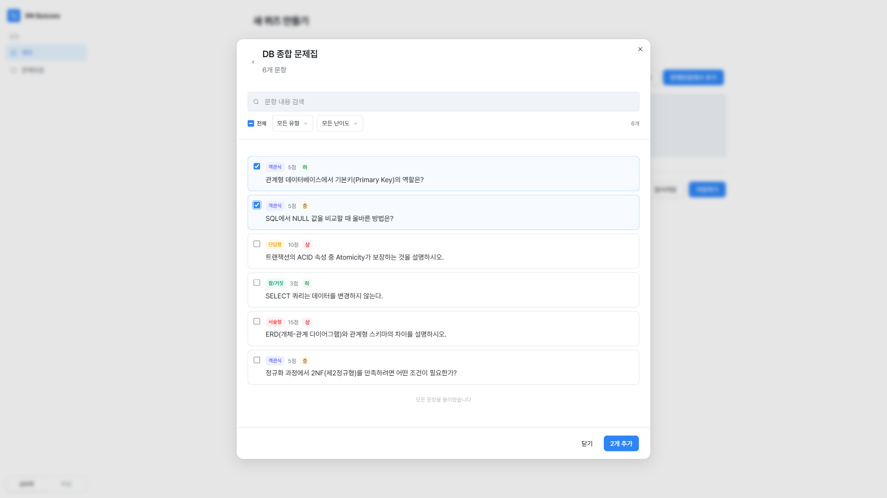
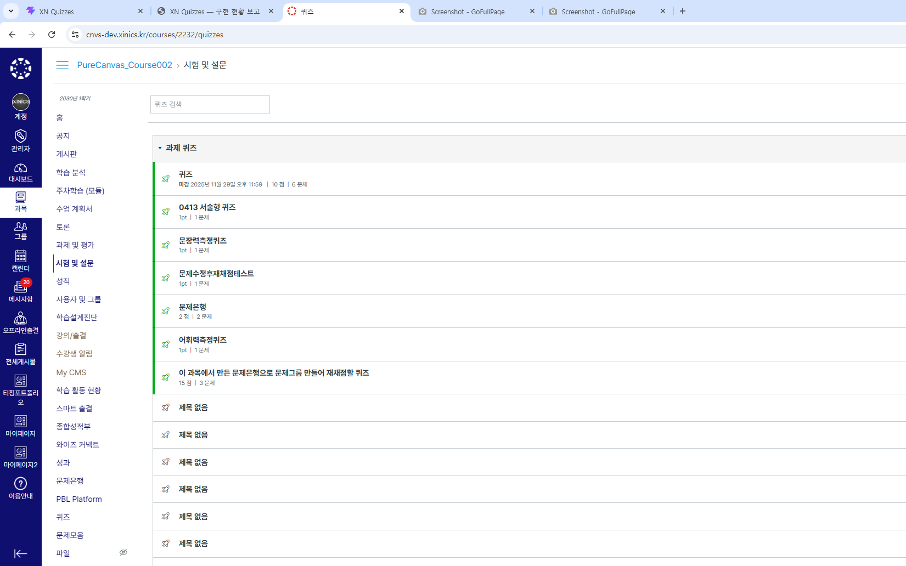
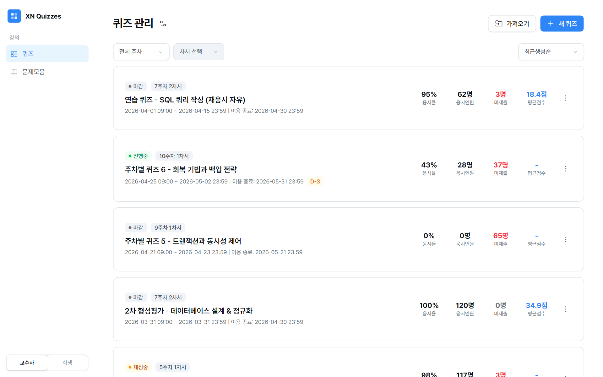
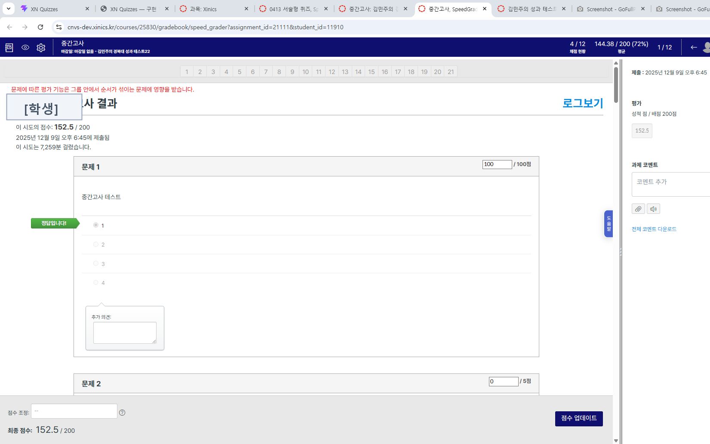
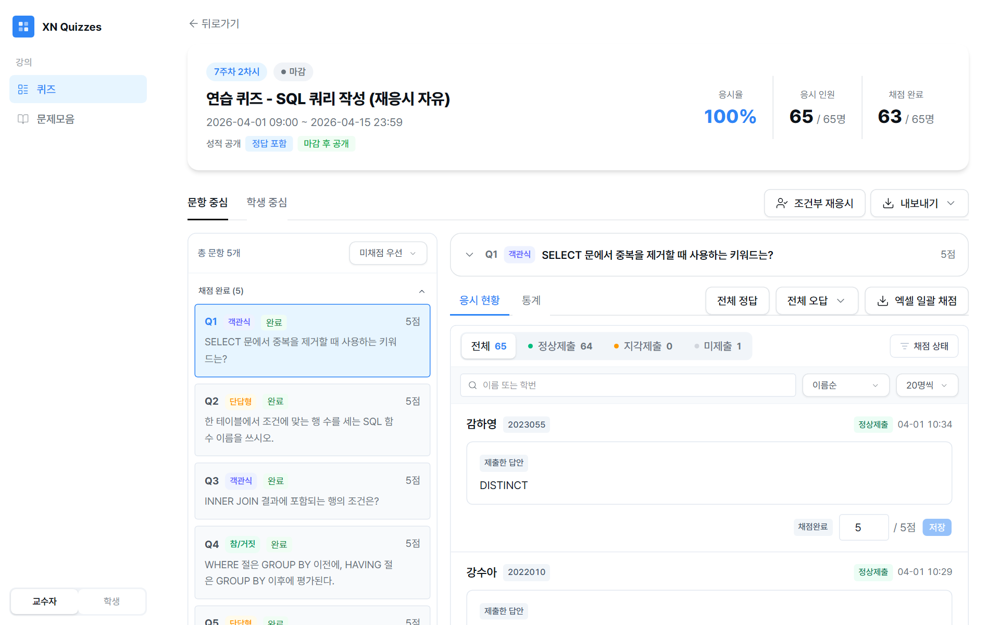
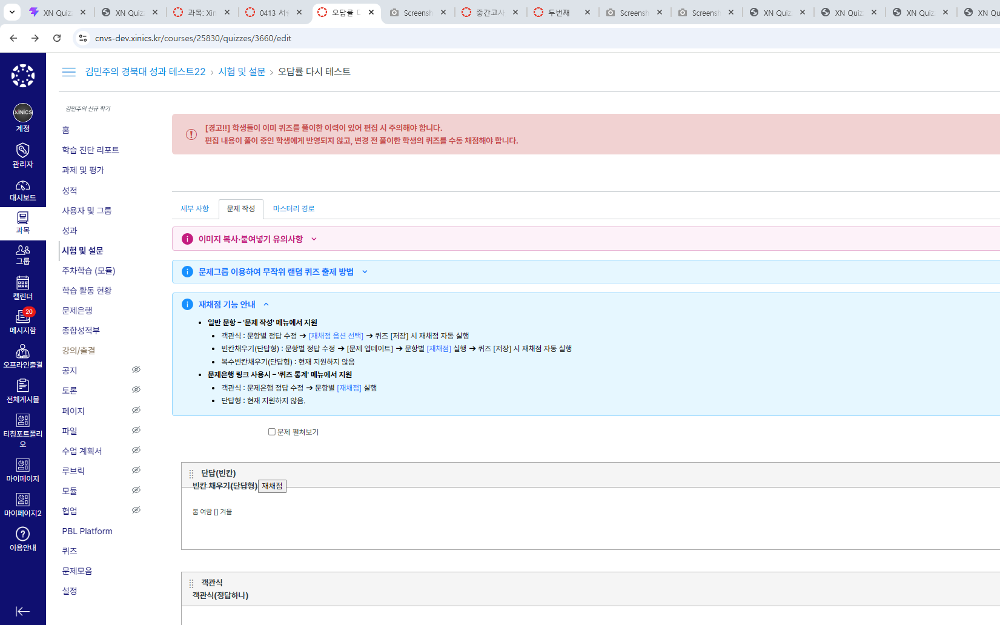
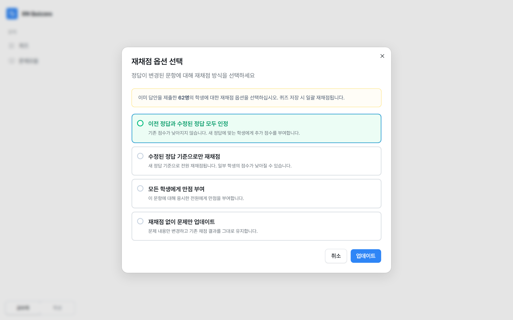
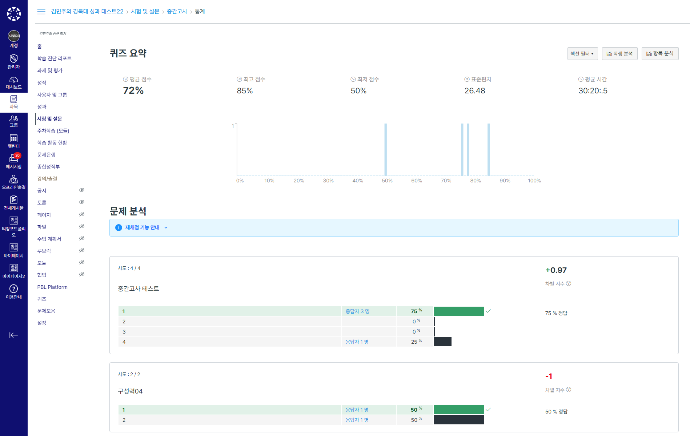
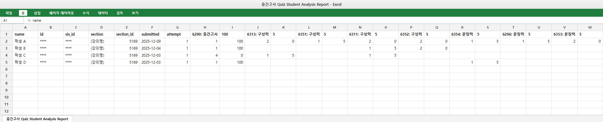
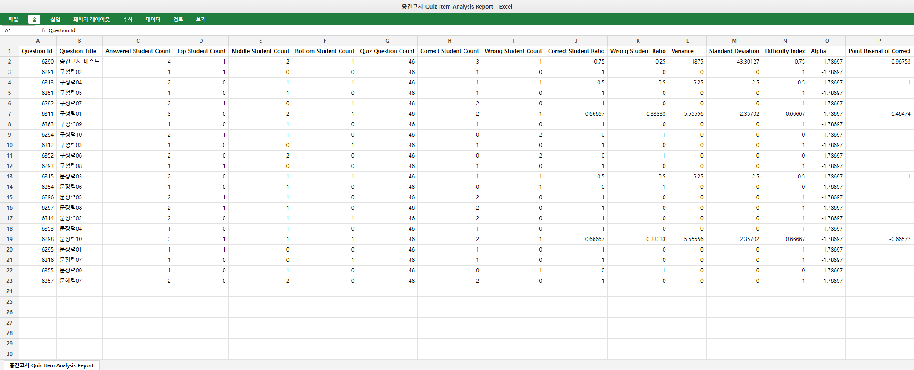
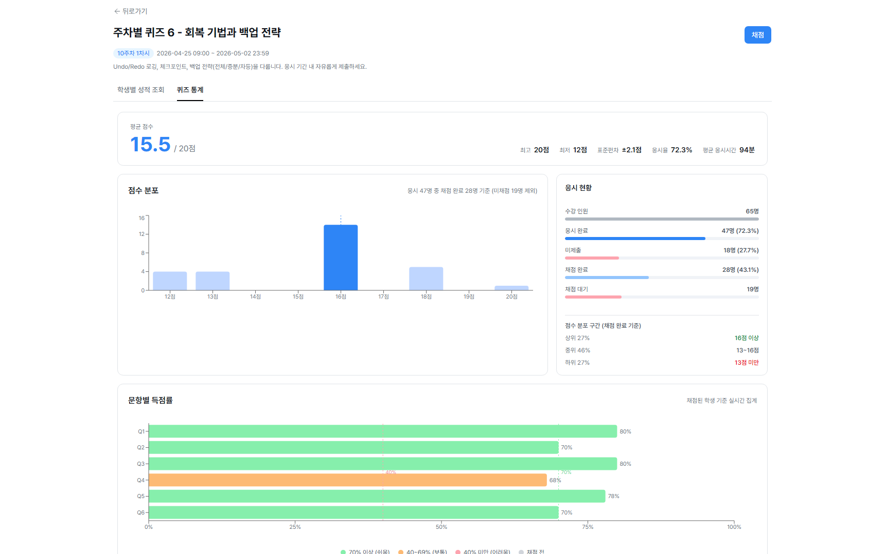
coral·bright-green 등)으로 정의 · 'grey'/'gray' 오타 혼재